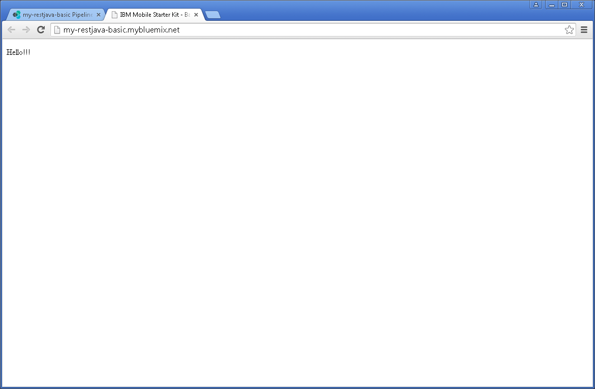
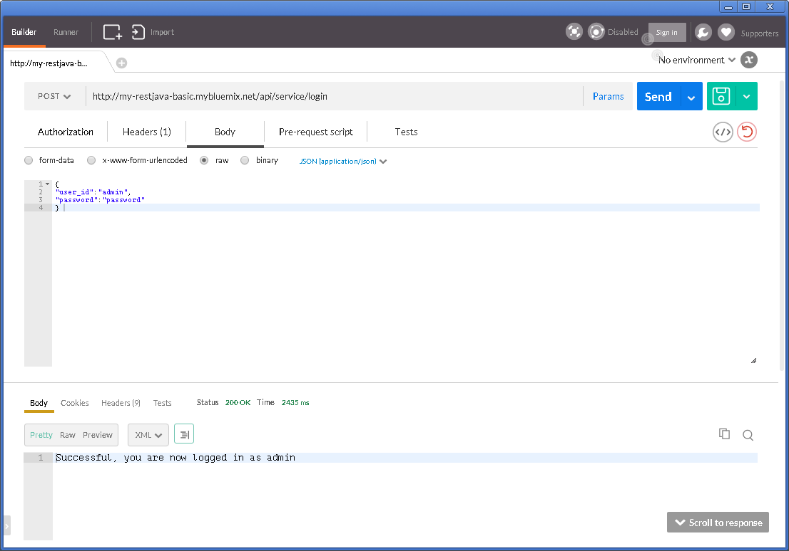

Fork DevOps
Services Project
1. Browse to url https://hub.jazz.net/project/ecosysdevcnc/javaplays-restjava-basic/overview. Click FORK PROJECT located at the top right corner

2.
Enter your Project name. Check on Private project, Add features for Scrum development, and most
importantly Make this a Bluemix Project.
Select accordingly Region, Organization, and Space,
then click CREATE button.

3.
You should see the Success message on the top of the page.

Configure and Run
Build and Deploy Pipeline
1. Click on BUILD
& DEPLOY, and there is currently no stage being defined yet at Pipeline.
Click ADD STAGE

2.
Enter the stage name as Build Stage.
Leave all the default values, and click on JOBS
tab.

3.
Click on  button, and select Build
button, and select Build

4.
For Builder Type, choose Ant. Click SAVE

5.
At the Pipeline page, we can see the
Build Stage has been successfully created. Click on  (Run
Stage icon)
(Run
Stage icon)
6.
At the JOBS section, it shows Build process is running.

7.
When there is no error, it shows Build
Succeeded.

8.
On the Pipeline page, click ADD STAGE. Name the stage Deploy Stage. Leave all the default
values, and click JOBS

9.
Click on button, and select Deploy.

10.
Verify the values for Target,
Organization, Space, and Application
Name, then at Deploy Script column edit the command to the following
cf
push “${CF_APP}” –p jpbackendmsktemplate.war
Finally,
click SAVE button.

11.
At the Pipeline page, we should the Deploy Stage has been successfully
created. Click on  (Run
Stage icon of Deploy Stage)
(Run
Stage icon of Deploy Stage)

12.
Deployment process is running now.

13.
If there is no error, we should see the successful message. Click on the link
my-restjava-basic.mybluemix.net

14. We should now see the simple page with message
“Hello!!!”

Test Running App
with Postman
1. Go to Postman extension page. Change to POST, and enter url http://my-restjava-basic.mybluemix.net/api/service/login
Click on Body tab, select raw, and enter the following:
{
“user_id”: “admin”,
“password”: “password”
}
Click Send button

2. Message
Successful displayed at the bottom
of the page

3.
Change the url to http://my-restjava-basic.mybluemix.net/api/service/searchtips. At the Body tag, change the content to the following:
{
“question”: “depression”
}
Click Send
button. If successful, bunch of messages appear per shown at screenshot below.

Modify Code in
DevOps Services Project
1. At the Bluemix DevOps, click EDIT CODE.

2.
Go to src > com > ibm > bluemix
> mobilestarterkit > ServiceAPI.java. Locate line 36, edit the line
to the following:
Return “Successful, you are now
logged in as ” + userID;
Click File > Save.
Then click on Git Repository
icon  located at the left menu bar
located at the left menu bar

3.
On the right window, you should see there are files that have been recently
modified. Click on the arrow to expand ServiceAPI.java.
You can click on  to see unified difference or side-by-side
difference.
to see unified difference or side-by-side
difference.
Confirm and verify the
changes. Check the checkbox next to Service.java, enter into the message
box change checkLogin success string.
Finally click Commit button

Push to Trigger
Pipeline
4. On the left window, under Outgoing section, we can see an item that we had just committed. Click Push button.

5.
We will see the success message pop out at the top.

6.
Click BUILD & DEPLOY button. On
the Pipeline page, we will need to rebuild the application. Click on  (Run
Stage icon) at Build Stage.
(Run
Stage icon) at Build Stage.

7.
When build successfully, click on  (Run
Stage icon) at Deploy Stage
(Run
Stage icon) at Deploy Stage

8.
If successful, we should see STAGE
PASSED

Test Modified
Running App with Postman
1. Go to Postman extension page. Change to POST, and enter url http://my-restjava-basic.mybluemix.net/api/service/login
Click on Body tab, select raw, and enter the following:
{
“user_id”: “admin”,
“password”: “password”
}
Finally click Send button. The success message has now changed to Successful, you are now logged in as admin.
